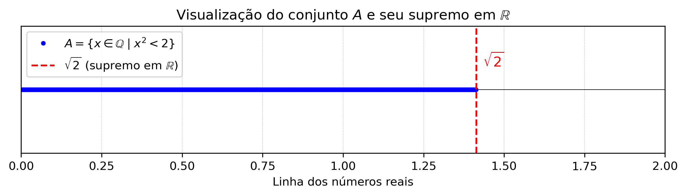

import matplotlib.pyplot as plt
import numpy as np
# Valores de x em um domÍnio visual interessante
x = np.linspace(0, 2, 400)
y = x**2
# Conjunto dos racionais x com x^2 < 2
# Escolhendo alguns pontos racionais especÍficos
rational_x = np.array([1.0, 1.2, 1.3, 1.4])
rational_y = rational_x**2
# Valor de sqrt(2)
sqrt2 = np.sqrt(2)
# Criando a imagem
plt.figure(figsize=(6, 4))
plt.plot(x, y, label=r'$y = x^2$', color='blue')
plt.axhline(2, color='gray', linestyle='--', label=r'$y = 2$')
plt.scatter(rational_x, rational_y, color='red', label=r'$\mathbb{Q}$ com $x^2 < 2$')
# Marcação do supremo
plt.axvline(sqrt2, color='green', linestyle='--', label=r'$\sup = \sqrt{2}$')
plt.text(sqrt2 + 0.02, 1, r'$\sqrt{2}$ (irracional)', color='green')
# Ajustes visuais
plt.title(r'Exemplo: $x \in \mathbb{Q} \mid x^2 < 2$')
plt.xlabel('x')
plt.ylabel('y')
plt.grid(True)
plt.legend()
plt.tight_layout()
# Mostrar imagem
plt.show()🧠🔢 Módulo 1.2: Conjuntos Numéricos – Aprofundamento
matemática
cálculo
conjuntos
conjuntos numéricos
enumerabilidade
Cantor
corpo
exercÍcios
Entenda os principais conjuntos numéricos, os tipos de intervalos e como resolver inequações básicas.
↠Voltar para a Seção de Matemática 🧮
↠Voltar para os Cursos de Matemática 📠🧮
🯠Post Anterior: 👉 1.2 Conjuntos Numéricos
1 🔢 Módulo 1.2: Conjuntos Numéricos – Aprofundamento
1.1 🧠Aprofundamento: Demonstração de que \(\sqrt{2}\) não é racional
🧠Aprofundamento: Demonstração de que \(\sqrt{2}\) não é racional
Proposição: \(\sqrt{2} \notin \mathbb{Q}\), ou seja, \(\sqrt{2}\) é irracional.
Demonstração (por redução ao absurdo):
Suponha, por absurdo, que \(\sqrt{2}\) seja um número racional. Então, existem inteiros \(a\) e \(b\), com \(b \ne 0\), tais que:
\[ \sqrt{2} = \frac{a}{b} \]
Além disso, podemos supor que a fração \(\dfrac{a}{b}\) está irredutÍvel, ou seja, \(\mathrm{mdc}(a, b) = 1\).
Elevando ambos os lados ao quadrado:
\[ 2 = \frac{a^2}{b^2} \Rightarrow a^2 = 2b^2 \]
Portanto, \(a^2\) é par, o que implica que \(a\) também é par, pois se \(a\) fosse Ímpar, \(a^2\) também seria Ímpar. Assim, existe um inteiro \(k\) tal que \(a = 2k\).
Substituindo:
\[ (2k)^2 = 2b^2 \Rightarrow 4k^2 = 2b^2 \Rightarrow b^2 = 2k^2 \]
Logo, \(b^2\) também é par, e portanto \(b\) é par.
Contradição: \(a\) e \(b\) são pares ⇒ \(\mathrm{mdc}(a, b) \geq 2\),
contrariando a hipótese de que a fração \(\dfrac{a}{b}\) era irredutÍvel.
Logo, a suposição de que \(\sqrt{2}\) é racional é falsa.
\[
\therefore \sqrt{2} \notin \mathbb{Q}
\]
1.2 🧠Aprofundamento: Comentário sobre o método de demonstração por redução ao absurdo
🧠Aprofundamento: Comentário sobre o método de demonstração por redução ao absurdo
A demonstração da irracionalidade de \(\sqrt{2}\) é um clássico exemplo de prova por redução ao absurdo (ou prova indireta).
Nesse método, parte-se da suposição contrária ao que se deseja provar — no caso, supõe-se que \(\sqrt{2} \in \mathbb{Q}\), ou seja, que pode ser escrita como uma fração \(\dfrac{a}{b}\) com \(a\) e \(b \in \mathbb{Z}\) e \(\mathrm{mdc}(a,b) = 1\).
A partir dessa hipótese, deduz-se logicamente que \(a\) e \(b\) seriam ambos pares — o que contradiz a condição inicial de que \(a\) e \(b\) não têm fatores comuns.
Essa contradição mostra que a suposição original não pode ser verdadeira.
Assim, conclui-se que \(\sqrt{2}\) não é um número racional.
Esse método é bastante utilizado em várias áreas da Matemática, principalmente quando não se conhece uma forma direta de prova.
1.3 🧠Aprofundamento: Conjuntos Enumeráveis e Não Enumeráveis
🧠Aprofundamento: Conjuntos Enumeráveis e Não Enumeráveis
- Conjunto Enumerável (ou contável): é um conjunto cujos elementos podem ser colocados em correspondência biunÍvoca com os números naturais. Ou seja, podemos listar seus elementos numa sequência (mesmo que infinita).
Exemplos:- Conjunto dos números naturais \(\mathbb{N}\).
- Conjunto dos inteiros \(\mathbb{Z}\).
- Conjunto dos racionais \(\mathbb{Q}\).
- Conjunto Não Enumerável (ou incontável): é um conjunto tão “grande†que não pode ser listado em sequência, mesmo infinita.
O exemplo mais famoso é:- O conjunto dos números reais \(\mathbb{R}\) \((\text{e, portanto, dos irracionais } \mathbb{R} \setminus \mathbb{Q})\).
Resumo:
Enumerável → Pode listar (como uma fila infinita).
Não enumerável → Não pode listar; tem “mais†elementos que os naturais.
1.4 🧠Aprofundamento: O Método Diagonal de Cantor
🧠Aprofundamento: O Método Diagonal de Cantor
O método diagonal de Cantor é uma prova elegante e poderosa criada por Georg Cantor para demonstrar que os números reais são mais numerosos do que os números naturais, ou seja, que o conjunto dos reais não é enumerável.
🧩 Ideia principal
Cantor mostrou que nenhuma lista que tente enumerar todos os números reais entre 0 e 1 pode ser completa. Ele faz isso construindo um número novo, que difere de todos os números da lista, alterando diagonalmente os dÍgitos da representação decimal.
🔠Passo a passo simplificado:
Suponha que seja possÍvel listar todos os números reais entre 0 e 1 como:
\[\begin{equation} \begin{aligned} & x_1=0 . a_{11} a_{12} a_{13} a_{14} \\ & x_2=0 . a_{21} a_{22} a_{23} a_{24} \\ & x_3=0 . a_{31} a_{32} a_{33} a_{34} \\ & \cdots \end{aligned} \end{equation}\]
Cantor constrói um novo número real, alterando os dÍgitos da diagonal:
- Escolhe o 1º dÍgito do 1º número, o 2º dÍgito do 2º número, o 3º dÍgito do 3º número, etc.
- Em cada posição, troca o dÍgito por um diferente (por exemplo, se for 5, troca por 6).
- Escolhe o 1º dÍgito do 1º número, o 2º dÍgito do 2º número, o 3º dÍgito do 3º número, etc.
O novo número, assim construÍdo, difere de cada número da lista em ao menos um dÍgito — o da diagonal.
✅ Conclusão:
Esse número não pode estar na lista original, o que leva à contradição: portanto, os reais não são enumeráveis.
1.5 🧠Aprofundamento: O Método Diagonal de Cantor e a Enumerabilidade dos Racionais Positivos
O Método Diagonal de Cantor e a Enumerabilidade dos Racionais Positivos
Uma descoberta surpreendente sobre os números racionais foi feita no final do século XIX e impulsionou a criação da Teoria dos Conjuntos por Georg Cantor, a partir de 1872. Embora os números racionais sejam densos e não possam ser ordenados de forma simples por magnitude, eles podem ser dispostos como uma sequência infinita \(r_1, r_2, \ldots, r_n, \ldots\) na qual todo número racional aparece uma vez.
Dessa forma, os números racionais podem ser enumerados ou contados como primeiro, segundo, …, enésimo número racional, mesmo que essa ordem não corresponda à ordem de grandeza dos números. Esse resultado — que também vale para os racionais contidos em qualquer intervalo — é expressado assim: os números racionais são enumeráveis, ou formam um conjunto enumerável.
Para provar esse resultado, basta fornecer uma regra para organizar os números racionais positivos em uma sequência. Todo número racional positivo pode ser escrito como \(p/q\), onde \(p\) e \(q\) são naturais. Para cada inteiro positivo \(k\), há exatamente \(k-1\) frações da forma \(p/q\) em que \(p + q = k\). Estas são organizadas em ordem crescente de \(p\).
Escrevendo essas listas para \(k = 2, 3, 4, \ldots\), obtemos (ver Figura abaixo) uma sequência que contém todos os racionais positivos. Omitindo as frações cujos numeradores e denominadores têm um fator comum maior que 1 — pois representam o mesmo número racional que uma fração anterior — obtemos a sequência:
\[ \frac{1}{1}, \frac{1}{2}, \frac{2}{1}, \frac{1}{3}, \frac{3}{1}, \frac{1}{4}, \frac{2}{3}, \frac{3}{2}, \frac{4}{1}, \frac{1}{5}, \frac{5}{1}, \frac{1}{6}, \frac{2}{5}, \ldots \]
na qual todo número racional positivo aparece exatamente uma vez. Uma sequência similar contendo todos os números racionais (positivos e negativos) ou apenas os contidos em um intervalo particular pode ser facilmente construÍda.

Crédito: Por Cronholm144 - Obra do próprio, CC BY-SA 3.0, Hiperligação
A demonstração do teorema segue a apresentação clássica encontrada em Courant e John (1996).
1.6 🧠Aprofundamento: Demonstração da Finitude da Representação Decimal
🔠Teorema: A fração \(\dfrac{a}{b}\) tem representação decimal finita se e somente se o denominador \(b\) (na forma irredutÍvel) tem como fatores apenas 2 e 5.
🧠Aprofundamento: Demonstração da Finitude da Representação Decimal
🔠Teorema: A fração \(\dfrac{a}{b}\) tem representação decimal finita se e somente se o denominador \(b\) (na forma irredutÍvel) tem como fatores apenas 2 e 5.
✍️ Demonstração:
Seja uma fração racional irredutÍvel \(\dfrac{a}{b}\), com \(a \in \mathbb{Z}\) e \(b \in \mathbb{N}\).
A representação decimal de \(\dfrac{a}{b}\) será finita se e somente se for possÍvel escrevê-la como uma fração com denominador da forma \(10^n\).
Sabemos que \(10^n = 2^n \cdot 5^n\), ou seja, os únicos fatores primos de \(10^n\) são 2 e 5.
Logo, se a fração \(\dfrac{a}{b}\) puder ser reescrita com denominador \(10^n\), então o denominador original \(b\) (já simplificado com \(a\)) só pode conter os fatores primos 2 e 5.
Se \(b\) tiver algum outro fator primo (como 3, 7, 11, etc.), então não será possÍvel transformá-lo em uma potência de 10, e sua representação decimal será infinita periódica (isto é, uma dÍzima periódica).
🔢 Exemplos:
\(\dfrac{3}{8} = 0{,}375\) ✅
(Denominador \(8 = 2^3\), apenas fator 2 → decimal finita)\(\dfrac{7}{20} = 0{,}35\) ✅
(Denominador \(20 = 2^2 \cdot 5\), apenas fatores 2 e 5 → decimal finita)\(\dfrac{4}{15} = 0{,}\overline{26}\) ❌
(Denominador \(15 = 3 \cdot 5\), contém fator 3 → dÍzima periódica)\(\dfrac{5}{6} = 0{,}\overline{83}\) ❌
(Denominador \(6 = 2 \cdot 3\), contém fator 3 → dÍzima periódica)
✅ Conclusão: A fração \(\dfrac{a}{b}\) tem representação decimal finita se e somente se o denominador \(b\) (na forma irredutÍvel) tem como fatores apenas 2 e 5.
1.7 🧠Aprofundamento: Propriedades dos Números Reais e a Estrutura de Corpo Ordenado Completo
🧠Aprofundamento: Propriedades dos Números Reais e a Estrutura de Corpo Ordenado Completo
Para compreender melhor as propriedades dos números reais, é útil adotar uma perspectiva mais abstrata e estrutural. A seguir, apresentamos um resumo das propriedades que caracterizam \(\mathbb{R}\) como um corpo ordenado completo.
🔷 1. Corpo \((\mathbb{R}, +, \cdot)\)
Um corpo (ou campo) é um conjunto não vazio munido de duas operações, adição (\(+\)) e multiplicação (\(\cdot\)), satisfazendo as seguintes propriedades:
Aditivas:
- Fechamento: Se \(a, b \in \mathbb{R}\), então \(a + b \in \mathbb{R}\).
- Associatividade: \((a + b) + c = a + (b + c)\).
- Elemento neutro: Existe \(0 \in \mathbb{R}\) tal que \(a + 0 = a\).
- Elemento simétrico: Para cada \(a \in \mathbb{R}\), existe \(-a\) tal que \(a + (-a) = 0\).
- Comutatividade: \(a + b = b + a\).
Multiplicativas:
- Fechamento: Se \(a, b \in \mathbb{R}\), então \(a \cdot b \in \mathbb{R}\).
- Associatividade: \((a \cdot b) \cdot c = a \cdot (b \cdot c)\).
- Elemento neutro: Existe \(1 \in \mathbb{R}\), com \(1 \ne 0\), tal que \(a \cdot 1 = a\).
- Inverso multiplicativo: Se \(a \ne 0\), existe \(a^{-1} \in \mathbb{R}\) tal que \(a \cdot a^{-1} = 1\).
- Comutatividade: \(a \cdot b = b \cdot a\).
Distributividade:
- \(a \cdot (b + c) = a \cdot b + a \cdot c\).
🔶 2. Corpo Ordenado
Além das propriedades anteriores, o conjunto dos reais possui uma relação de ordem total \((\leq)\) compatÍvel com as operações, ou seja:
Tricotomia: Para todo \(a \in \mathbb{R}\), vale exatamente uma das alternativas: \[a > 0 \text{, } a = 0 \text{ ou } a < 0\].
Fechamento da ordem:
Se \(a \leq b\), então \(a + c \leq b + c\).
Se \(0 \leq a\) e \(0 \leq b\), então \(0 \leq a \cdot b\).
Essa estrutura torna \(\mathbb{R}\) um corpo ordenado.
🟩 3. Corpo Ordenado Completo
A completude é a propriedade que distingue os números reais dos racionais:
- Propriedade de completude: Todo subconjunto não vazio de \(\mathbb{R}\) que é limitado superiormente possui um supremo (menor dos majorantes) em \(\mathbb{R}\).
Essa propriedade não é satisfeita pelos racionais \((\mathbb{Q})\), o que justifica a construção dos reais como extensão de \(\mathbb{Q}\).
📌 Resumo: O conjunto dos números reais \(\mathbb{R}\) é um corpo ordenado completo, estrutura fundamental para a Análise Matemática e outras áreas da Matemática pura e aplicada.
1.8 🧠Aprofundamento: A Propriedade de Completude dos Números Reais
🧠Aprofundamento: A Propriedade de Completude dos Números Reais
No conjunto dos números reais \(\mathbb{R}\), todo subconjunto não vazio e limitado superiormente possui um supremo (também chamado de mÍnimo limite superior). Essa é a propriedade de completude (ou axioma do supremo) dos reais — algo que não ocorre nos racionais \(\mathbb{Q}\).
Vamos entender melhor alguns termos importantes:
Limitado superiormente: um conjunto \(A \subset \mathbb{R}\) é limitado superiormente se existe um número real \(M\) tal que todo elemento \(a \in A\) satisfaz \(a \leq M\).
Limitado inferiormente: um conjunto \(A \subset \mathbb{R}\) é limitado inferiormente se existe \(m \in \mathbb{R}\) tal que \(a \geq m\) para todo \(a \in A\).
Majorante: é qualquer número real \(M\) que seja maior ou igual a todos os elementos do conjunto. Ex: \(10\) é majorante de \(A = \{1, 2, 5\}\), mas também é majorante de \(A = \{1, 2, 5, 9.9\}\).
Minorante: é um número real \(m\) tal que \(m \leq a\), para todo \(a \in A\).
Supremo (limite superior mÍnimo): é o menor dos majorantes de um conjunto. Mesmo que ele não pertença ao conjunto, ele representa a menor “barreira superior”.
Ínfimo (limite inferior máximo): é o maior dos minorantes. Análogo ao supremo, mas inferior.
Exemplo: Considere o conjunto
\[
A = \{x \in \mathbb{Q} \mid x^2 < 2\}.
\] Esse conjunto é formado por todos os números racionais cujo quadrado é estritamente menor que 2.
Note que \(A\) é limitado superiormente em \(\mathbb{Q}\), pois há racionais maiores do que todos os seus elementos. Por exemplo, \(x = 2\) é um majorante racional, já que \(2^2 = 4 > 2\), e todos os elementos de \(A\) são menores que 2.
No entanto, não existe um supremo racional para esse conjunto, ou seja, não há um menor dos majorantes de \(A\) que pertença a \(\mathbb{Q}\). O número que melhor cumpriria esse papel seria \(\sqrt{2}\), que é irracional \((\sqrt{2} \notin \mathbb{Q})\).
Assim, qualquer racional menor que \(\sqrt{2}\) não é majorante de \(A\), e qualquer racional maior que \(\sqrt{2}\) não pertence ao conjunto, o que impede que o supremo exista dentro dos racionais.
Já no conjunto dos reais \(\mathbb{R}\), o número \(\sqrt{2}\) existe e pertence ao corpo dos reais. Assim, em \(\mathbb{R}\), o supremo de \(A\) é:
\[
\sup A = \sqrt{2}.
\]

Este exemplo mostra que \(\mathbb{Q}\) não é um corpo completo — existem subconjuntos de \(\mathbb{Q}\) que são limitados superiormente, mas não possuem supremo em \(\mathbb{Q}\).
Por outro lado, \(\mathbb{R}\) é um corpo completo, pois todo subconjunto limitado superiormente possui um supremo em \(\mathbb{R}\).
💡 Resumo importante:
A propriedade de completude garante que os reais “preenchem todos os buracos†da reta numérica. É isso que faz \(\mathbb{R}\) ser um corpo ordenado completo.
1.9 👨‍💻 🐍 Aprofundamento: Código Python – Visualizando o Conjunto \(\{ x \in \mathbb{Q} \mid x^2 < 2 \}\)
👨‍💻 🐍 Aprofundamento: Código Python – Visualizando o Conjunto \(\{ x \in \mathbb{Q} \mid x^2 < 2 \}\)
Use o código abaixo no Jupyter para visualizar o conjunto de racionais cujo quadrado é menor que 2. A curva \(y = x^2\), os racionais \(1\), \(1.2\), \(1.3\), \(1.4\) e o supremo \(\sqrt{2}\) também são exibidos.

1.10 🧠ExercÍcios de Revisão
🧠ExercÍcios de Revisão — Módulo 1.2: Conjuntos Numéricos
Determine se os conjuntos abaixo são enumeráveis ou não enumeráveis:
- \(\mathbb{N}\) (b) \(\mathbb{Z}\) (c) \(\mathbb{Q}\) (d) \(\mathbb{R}\) (e) Conjunto dos números irracionais positivos
Use o Método Diagonal de Cantor para demonstrar que os números reais entre 0 e 1 são não enumeráveis.
O conjunto \(\mathbb{R}\) é um corpo ordenado completo. Explique o que isso significa com suas próprias palavras.
Utilize redução ao absurdo para demonstrar que \(\sqrt{2}\) não é racional.
Mostre que a representação decimal de um número racional é sempre finita ou periódica.
Explique por que não existem números racionais cuja expansão decimal seja infinita não periódica.
Escreva uma definição formal de conjunto enumerável, e justifique por que \(\mathbb{Q}\) é enumerável.
Mostre por que o conjunto \(\mathbb{N} \times \mathbb{N}\) (pares ordenados de naturais) é enumerável.
Por que a propriedade de completude não vale em \(\mathbb{Q}\)? Dê um exemplo.
Escreva a fração geratriz da dÍzima periódica abaixo e simplifique o resultado: \[ x = 0,142857\;142857\ldots \]
1.11 📠Resoluções Comentadas
📝 Resoluções Comentadas
- Enumerável
- Enumerável
- Enumerável
- Não enumerável
- Não enumerável
- Enumerável
O método diagonal constrói um número diferente de cada número de uma lista supostamente completa, mostrando que tal lista nunca é completa, então ℠não é enumerável.
Corpo ordenado completo: \(\mathbb{R}\) tem as operações +, ×, ≤ bem definidas, com propriedades usuais, e satisfaz a propriedade de completude: todo conjunto limitado superiormente possui supremo.
Suponha que \(\sqrt{2} = \frac{p}{q}\) seja racional e irredutÍvel. Então \(2q^2 = p^2\), logo \(p^2\) é par, e \(p\) também é par. Seja \(p = 2k\). Substituindo, temos \(2q^2 = (2k)^2 = 4k^2 \Rightarrow q^2 = 2k^2\), então \(q\) também é par — o que contradiz a suposição de que \(\frac{p}{q}\) é irredutÍvel.
Conclusão: \(\sqrt{2} \notin \mathbb{Q}\).Se um número racional é escrito como fração \(\frac{p}{q}\), com \(q \in \mathbb{N}\), a divisão de \(p \div q\) terá, no máximo, \(q\) restos possÍveis: \(0, 1, \ldots, q-1\). Como o conjunto de restos é finito, o processo de divisão entra em repetição após certo ponto → a expansão decimal será finita ou periódica.
Números racionais sempre têm divisão com restos finitos. Uma expansão decimal infinita não periódica indica que não há repetição nos restos, o que só pode ocorrer com irracionais.
Portanto, apenas irracionais têm expansão infinita não periódica.Um conjunto \(A\) é enumerável se existe uma bijeção \(f: \mathbb{N} \to A\).
O conjunto \(\mathbb{Q}\) é enumerável porque seus elementos podem ser escritos como frações \(\frac{p}{q}\), organizadas em uma tabela e percorridas por diagonais — como mostrou Cantor.O conjunto \(\mathbb{N} \times \mathbb{N}\) pode ser listado diagonalmente:
\[ (1,1), (1,2), (2,1), (1,3), (2,2), (3,1), \ldots \] Essa técnica estabelece uma bijeção com \(\mathbb{N}\), mostrando que o produto cartesiano de dois conjuntos enumeráveis também é enumerável.Exemplo clássico:
O conjunto \(A = \{x \in \mathbb{Q} \mid x^2 < 2\}\) é limitado superiormente em \(\mathbb{Q}\), mas não possui supremo racional (pois \(\sqrt{2} \notin \mathbb{Q}\)).
Portanto, \(\mathbb{Q}\) não satisfaz a propriedade de completude.Essa é uma dÍzima periódica de perÍodo 6. Seja:
\[ x = 0,142857\;142857\ldots \]
Multiplicamos ambos os lados por \(10^6=1.000.000\):
\[ 10^6 x = 142857,142857\dots \]
Subtraindo as equações:
\[ 10^6 x - x = 142857,142857\ldots - 0,142857\ldots \] \[ (10^6 - 1)x = 142857 \] \[ 999999x = 142857 \] \[ x = \frac{142857}{999999} \]
Simplificando:
\[ x = \frac{1}{7} \]
Portanto, \(0,142857142857\ldots = \frac{1}{7}\).
🯠Próximo Post: ⳠEm Breve!
🔠Voltar ao Topo
Blog do Marcellini — Explorando a Matemática com Rigor e Beleza.
Nota
Criado por Blog do Marcellini com ❤️ e código.
2 🔗 Links Úteis
- 🧑‍🏫 Sobre o Blog
- 💻 GitHub do Projeto
- 📬 Contato por E-mail